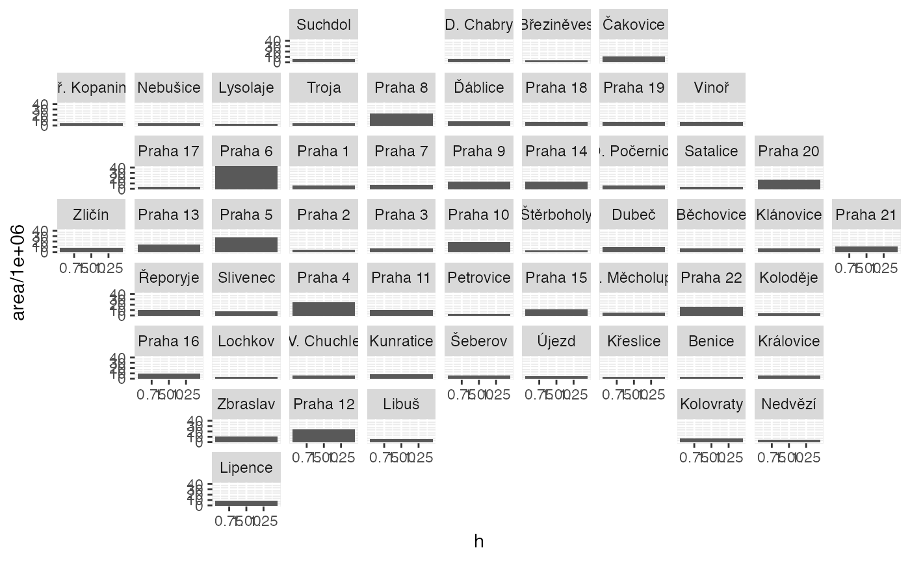

library(pragr)
library(CzechData)
#> Loading required package: sf
#> Linking to GEOS 3.8.1, GDAL 3.1.4, PROJ 6.3.1
library(geofacet)
library(ggplot2)
library(dplyr)
#>
#> Attaching package: 'dplyr'
#> The following objects are masked from 'package:stats':
#>
#> filter, lag
#> The following objects are masked from 'package:base':
#>
#> intersect, setdiff, setequal, union
library(sf)
phamc0 <- CzechData::load_RUIAN_settlement("554782", "MOMC_P")
#> ✔ Data downloaded and unpacked.
mcds <- phamc0 %>%
mutate(area = st_area(geometry) %>% units::drop_units(),
h = 1) %>%
st_set_geometry(NULL) %>%
select(code = kod, area, h)
mcds %>%
ggplot(aes(y = area/1e6, x = h)) +
geom_col() +
facet_geo(~ code, grid = district_geofacet %>%
left_join(district_names %>% select(code = kod, name_label = nazev_short)),
label = "name_label")
#> Joining, by = "code"
#> Note: You provided a user-specified grid. If this is a generally-useful
#> grid, please consider submitting it to become a part of the geofacet
#> package. You can do this easily by calling:
#> grid_submit(__grid_df_name__)